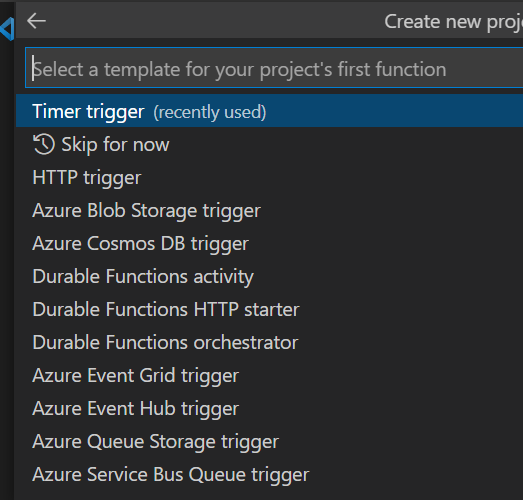

Azure Function App with Python¶
In order to create an Azure Function App, first you have to install Azure Tools extension in the Visual Studio Code.
Once you have added the extension, You can click on the Azure Icon on the side bar. You can see various Azure resources like Web app service, Storage account, Functions etc. Click on the Functions tab and click on the folder Icon to create a new function app.
.png)
After clicking on the folder icon to create a new function, it will ask you to specify some of the details like project folder, runtime stack and version. Select Python as runtime stack and choose the appropriate version. After that it will ask you to select a project template. We have various Azure functions templates like Time trigger functions, HTTP trigger functions and so on. Choose the appropriate template.
The next step is to add a CRON expression. CRON expression determines when the app should execute the functions. You can learn more about the CRON expressions here.
Once done, your function app will be created with a basic __init__.py file. You can edit this __init__.py file according to your requirement. (PS: Note that Azure Functions looks for __init__.py file as the entry point. )
After modifying your code, you can push the code to function app by creating Build and Release pipelines in azure devops. The build pipeline can be built the same way we did it for Web apps. For release pipeline, select the template as “Deploy a function app to Azure Functions” as shown below.
After deployment, you can check the function in the function app.
PS: In order to test the app in your local, you need to install Azure Storage Emulator and start it before testing. You can download Azure storage emulator from here.